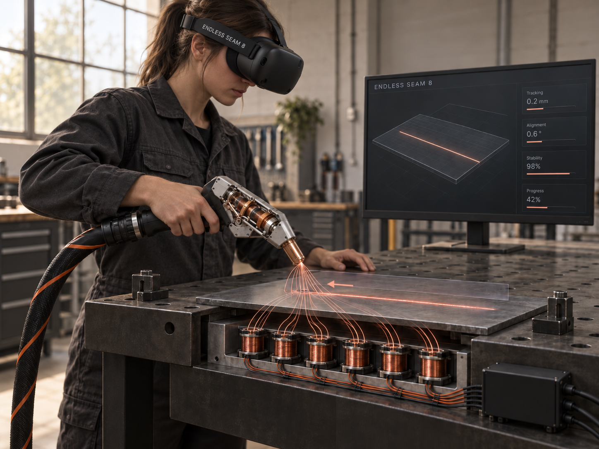

Repeat a pass
Reuse the workpiece
Practice torch movement above a reusable mock joint. Simulated passes do not melt metal or consume welding wire
Your hand learns the seam before you ever fire the laserNo burnt plates, no class-4 beam, no instructor behind every student

Practice torch movement above a reusable mock joint. Simulated passes do not melt metal or consume welding wire
Planned on-screen markers, sound cues and handle pulses will identify where a movement leaves the exercise’s target range
TECHNOLOGY / HOW WE WILL BUILD IT
The controller is held freely in the trainee’s hand, with no mechanical arm or fixed connection to the table. A tracked mock workpiece provides the physical reference for the virtual joint
We will fit a mock laser torch with a VR tracker, inertial sensors and a handle vibration actuator. Calibration will align the physical nozzle tip with its virtual position. A flexible power cable will allow movement without fixing the hand’s path
The simulator will calculate nozzle-to-joint distance, torch orientation, travel speed and deviation from the seam. Each exercise will define target ranges for its joint and process settings. VR will display the joint, a guide path and the simulated pass result
A brief handle pulse and confirmation tone can mark a correct segment. Repeated pulses, a warning tone and a highlighted segment can signal an out-of-range angle or speed. A current-controlled coil and matched magnets in the mock workpiece will be tested for local attraction and repulsion near the surface
The instructor will be able to adjust guide visibility, cue frequency and physical cue strength, within validated limits. The pass review will mark angle, distance and speed errors along the seam. An assessment mode will remove guidance to measure independent performance
Physical cues communicate training information; they do not reproduce a “laser force.” Magnetic forces act locally and cannot guide the hand along an arbitrary path. Repulsion requires a matched magnetic arrangement, not just a plain steel plate. Force limits, coil temperature, tracking accuracy and response delay still require prototype testing
RESEARCH FOUNDATION
These sources inform the concept. They do not establish the training effectiveness of Endless seam 8, which needs its own controlled evaluation
Ye and colleagues studied VR with robotic position and force guidance in 30 participants. They reported benefits in task completion time and force-control accuracy
The study evaluated robot-assisted welding training. Its results cannot be directly transferred to a freely held laser welding controller
Enhance Kinesthetic Experience in Perceptual Learning for Welding Motor Skill Acquisition With Virtual Reality and Robot-Based Haptic Guidance
Yang Ye, Pengxiang Xia, Fang Xu, Jing Du. IEEE Transactions on Haptics, 17(4), 771–781
The application describes controlled attraction and repulsion between a training tool and workpiece, including vibration-like sensations associated with simulated welding events
US20260127978A1 is an Illinois Tool Works application published on May 7, 2026. It is an external technical reference, not an Endless seam 8 patent or a study of learning outcomes
WELD TRAINING SIMULATION SYSTEMS WITH ELECTROMAGNETIC HAPTIC FEEDBACK
Jeremy Bruesewitz, Jordan J. Kopac III, Joseph C. Schneider, Matthew Guse
Planned validation: compare practice with and without physical cues, then measure skill retention and transfer to real equipment under an instructor’s supervision
INTELLECTUAL PROPERTY
A VR trainer for laser welding with positive and negative physical, visual and audio feedback, and adjustable assistance for learning laser welding
Positive feedback will acknowledge movement within the exercise’s target ranges; negative feedback will identify deviations in torch angle, working distance or travel speed. Instructors will be able to adjust the amount of assistance, from guided practice to independent assessment
Placeholder description of the proposed concept, not verified patent claims. Patent details and protection status have not been supplied; this section does not confirm a patent grant
TRAINING EXPERIENCE
I would use repeat passes to practice holding a steady travel speed before working with the real laser
I would want to see exactly where a student changes the torch angle, then review that segment together
We could use a simulated joint to rehearse the hand movement before supervised practice on laser equipment